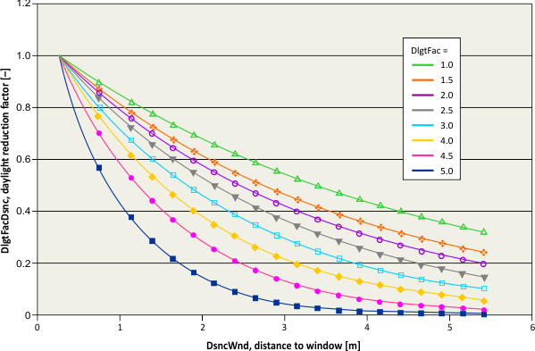
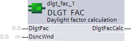

DLGT_FAC: Daylight factor calculation
Function
The FC DLGT_FAC [FC 445] calculates the daylight reduction factor depending on the light absorbtion of the room and the distance to the window. The function is an inverse exponential curve characteristic.
The calculated value DlgtFac indicates how much of the daylight is present inside the room on a certain point.
The input DsncWnd describes the distance between the window and the certain point.
The input DlgtFac describes the daylight absorbtion of the room.
Functionality
DlgtFac is calculated according to a formula. The FC checks the inputs for meaningful values.
If DsncWnd ≤ 0.25, then the DlgtFacCalc will be set to 1.0.
If DlgtFac ≤ 0.0, then the DlgtFacCalc will be set to 1.0E-6.
Only if the input parameters are within the meaningful range, DlgtFacCalc will be calculated. The value of DlgtFacCalc will be limited to min. = 1.0E-6 and max. = 3.4E38.


Inputs
Pin | E | O | Description |
DlgtFac | pa |
| Daylight factor. |
DsncWnd | pa |
| Distance to Window. |
Outputs
Pin | E | O | Description |
DlgtFacCalc | a |
| Calculated daylight factor. |
Pin data
Pin | Description | Data type | Default value | E.g. Engineering unit or Text group | Min. | Max. | Pin type |
DlgtFac |
| Real | 1.0 | - - - | 0.01 | 3.402822E38 | In |
DsncWnd | Distance to window | Real | 1.0 | m | 0.2 | 3.402822E38 | In |
3.3 | ft | 0.8 | 3.402822E38 | ||||
1.1 | yd | 0.25 | 3.402822E38 | ||||
DlgtFacCalc | Calculated daylight factor | Real | 1.0 | — | 0.01 | 3.402822E38 | Out |
Application
tbd
Process response
Standard (see General rules and information).
Troubleshooting
Standard (see General rules and information).